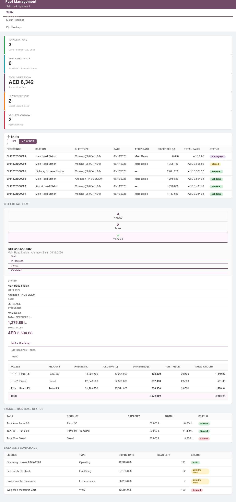

📸 Module Preview

Recipe list with cost per kg · Production batch with yield tracking · Quality check with sensory scoring · Machine maintenance log
🚀 Key Features
Recipe / Formula Management
Define complete product formulas with ingredients, proportions, allergen flags, nutritional info, and process parameters like cooking temperature and mixing time.
Production Batch Tracking
Full lifecycle management: Draft → Confirmed → In Production → Quality Check → Done. Assign shift, supervisor, and machine per batch with yield and cost tracking.
Multi-Stage Quality Control
In-process, final, and packaging QC checks with configurable numeric parameters, pass/fail ranges, and sensory evaluation (taste, color, texture, aroma) scoring.
Ingredient Cost Tracking
Real-time cost per kg based on actual ingredient consumption. Compare estimated vs actual costs and identify wastage across every production run.
Machine & Equipment Management
Register factory machines with type, capacity, location, and status. Track usage logs, maintenance schedules, downtime, and total runtime hours automatically.
Allergen & Compliance Tracking
Flag recipes containing nuts, dairy, gluten, eggs, or soy. Ensure product labeling compliance for MENA region food safety regulations.
Yield & Variance Analysis
Track planned vs actual yield percentage with variance calculation per batch. Spot production inefficiencies and recipe inconsistencies at a glance.
Expiry Date & Lot Traceability
Auto-calculate expiry dates from production date and shelf life defined per recipe. Full lot traceability for every output product across all batches.
📖 How It Works
Set Up Recipes & Configuration
Create your product recipes with ingredients, quantities, and process parameters. Define quality parameters for each sweet type. Register your factory machines and configure quality check stages (in-process, final, packaging) in the Configuration menu.
Create & Run Production Batches
Create a batch linked to a recipe, set the planned batch size, assign a machine, shift, and supervisor, then click Confirm and Start Production. Record actual ingredient consumption as production proceeds and register finished output products with grades and lot numbers.
Quality Check & Close Batch
Once production is complete, move the batch to Quality Check state. Create a QC inspection, fill in parameter measurements and sensory scores — the system auto-calculates pass/fail per parameter. Approve, conditionally pass, or reject. Close the batch and print the full Batch Production PDF Report.
Monitor Machines & Maintenance
Log each machine usage session and maintenance event. Track total runtime hours, breakdown incidents, and upcoming maintenance dates. Set machine status (Available, Running, Maintenance, Breakdown) with a single click from the machine form.
🗂 Data Models
| Model | Description | Key Fields |
|---|---|---|
| sweet.recipe | Product Recipe / Formula | Sweet type, ingredients, yield %, allergens, shelf life, cost/kg |
| sweet.recipe.ingredient | Ingredient Line per Recipe | Product, qty per batch, % of batch, unit cost |
| sweet.batch | Production Batch (workflow) | Recipe, batch size, shift, supervisor, machine, state, actual yield |
| sweet.batch.ingredient.line | Actual Ingredient Consumption | Product, planned qty, actual qty, variance, cost |
| sweet.batch.output.line | Finished Product Output | Product, qty, grade, packaging type, lot number, expiry date |
| sweet.quality.parameter | QC Parameter Definition | Category, type (numeric/boolean/text), min/max/target values |
| sweet.quality.check | QC Inspection per Batch | Batch, stage, result, sensory scores (taste/color/texture/aroma) |
| sweet.machine | Factory Equipment Registry | Machine type, status, capacity, location, maintenance dates |
| sweet.machine.log | Machine Usage & Maintenance Log | Log type, duration, qty produced, issues found |
🔐 Access Rights
| Group | Permissions |
|---|---|
| Sweet Factory / User | Read, create, and edit recipes, batches, ingredient lines, output products, quality checks, and machine logs. Read-only access to machines and quality parameters. |
| Sweet Factory / Manager | Full access including delete on all records. Manage quality parameters, approve recipes, configure machines, and access the Configuration menu and all PDF reports. |
⚙️ Technical Information
| Attribute | Value |
|---|---|
| Odoo Version | 19.0 |
| Module Version | 19.0.1.0.0 |
| License | LGPL-3 |
| Author | LeapAI |
| Category | Manufacturing |
| Dependencies | mrp, stock, mail, account, purchase, sale_management, hr |
| Languages | English, Arabic (ar) |
| Demo Data | Yes — 3 recipes, 4 batches, 4 machines, 8 QC parameters, 2 quality checks |
| PDF Reports | QWeb PDF — Batch Production Report |